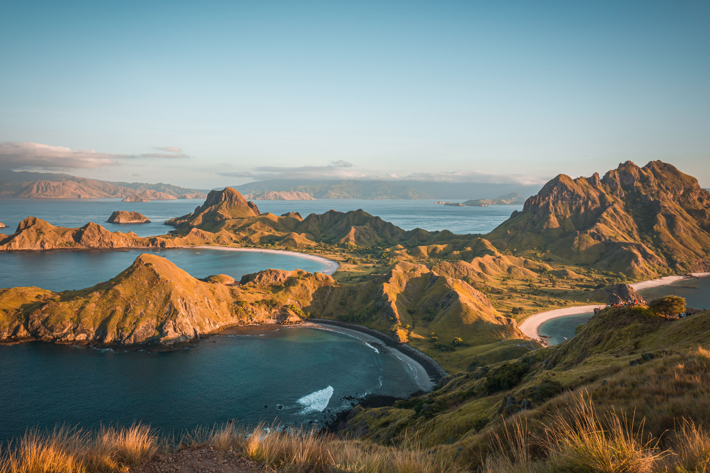
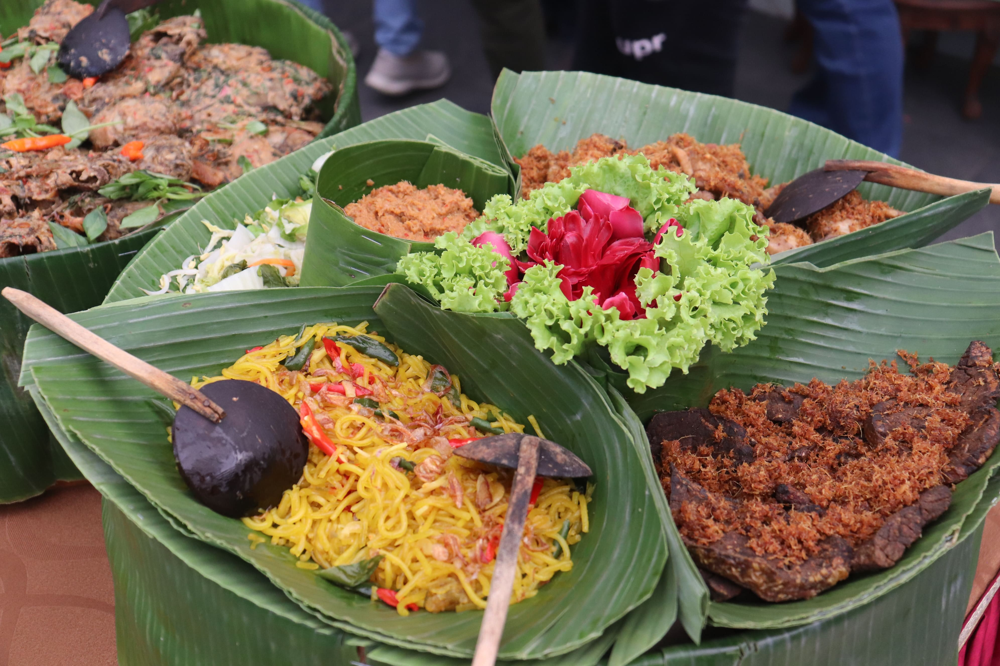
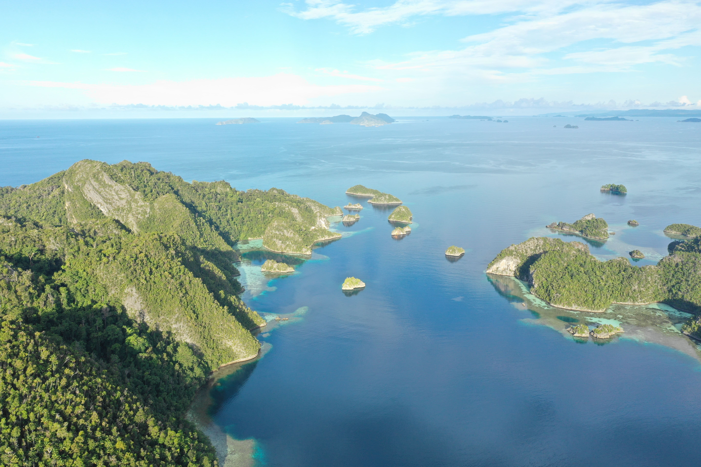

Mengenal 10 Destinasi Prioritas Pariwisata Indonesia

Semua daerah yang didaulat menjadi “10 Bali Baru” tentunya memiliki keunikan dalam memberi
pengalaman wisata tak
terlupakan seperti halnya pulau Bali. Lantas, daerah mana saja yang masuk dalam 10 Destinasi
Prioritas Pariwisata
Indonesia? 1. Mandalika, Nusa Tenggara Barat Mandalika memiliki pesona alam
yang tiada tandingannya. Pantai dan bukit
yang indah akan melengkapi liburan Anda. Ditambah, sedang dibangun sirkuit berkelas
internasional yang digunakan untuk
ajang bergengsi MotoGP 2021. 2. Pulau Morotai, Maluku Utara Pulau yang
menyimpan sejarah Perang Dunia II. Terdapat 33
pulau kecil, di antaranya pulau Kolorai, pulau Ngele-ngele Kecil dan Besar, pulau Golo-golo,
pulau Rap, serta pulau
Saminyamau. Pulau ini dijuluki "Mutiara di Bibir Pasifik". 3. Tanjung Kelayang,
Kepulauan Bangka Belitung Pantai pasir
putih tercantik dengan pemandangan eksotis batuan tinggi. Anda dapat jalan kaki dan berenang
bersama ikan dari dekat,
dan air yang jernih berwarna biru kehijauan dan ombak yang tenang. 4. Danau Toba,
Sumatera Utara Tercatat sebagai danau
terbesar di Asia Tenggara, dan nomor 2 terbesar di dunia. Di area Danau Toba juga terdapat objek
wisata air terjun
tertinggi di Indonesia, yaitu air terjun Sipiso-piso. 5.Wakatobi, Sulawesi Tenggara
Hampir sekitar 90% jenis karang di dunia terdapat di Wakatobi, sehingga dikenal
sebagai surganya bawah laut, dan salah satu world class diving site. Wakatobi ditetapkan sebagai
Cagar Biosfer Bumi ke-8 oleh UNESCO (2012). 6. Borobudur, Jawa Tengah Candi
Borobudur
dikenal candi terbesar di dunia yang ada sejak 750 Masehi. Di balik kemegahan Candi Borobudur,
Anda juga dapat melihat
panorama pegunungan yang akan membuat takjub. 7. Kepulauan Seribu, DKI Jakarta
Memiliki sekitar 110 pulau. Setiap pulau
menyuguhkan pemandangan yang berbeda-beda, mulai dari budidaya Mangrove, wisata air, snorkeling,
hingga surga selam. 8.
Tanjung Lesung, Banten Tidak hanya unggul dari keindahan alamnya, Tanjung Lesung
juga memiliki banyak fasilitas menarik,
seperti water sports, snorkeling dan diving, hingga berburu sunrise di pesisir pantai.
9. Bromo, Jawa Timur Salah satu
gunung terkenal di Jawa Timur dengan ketinggian 2.393 mdpl, yang seakan berada di negeri atas
awan. Di sini, Anda dapat
menikmati matahari terbit ditemani dengan pemandangan padang rumput dan bunga-bunga cantik.
10. Labuan Bajo, Nusa
Tenggara Timur Surga bawah laut yang tidak ada tandingan. Adanya fasilitas
snorkeling dan diving membawa setiap
wisatawan bisa menikmati surga bawah laut dengan melihat berbagai biota laut.
Daya Tarik Daerah Wisata Bali, Mulai dari Keindahan Alam hingga
Keragaman Budaya
Daerah wisata Bali memiliki daya tarik tersendiri bagi para wisatawan. Hingga saat ini, Pulau
Bali masih menjadi salah satu
destinasi wisata Indonesia yang menarik wisatawan lokal maupun internasional.
Mengutip jurnal Keunikan Budaya dan Keindahan Alam sebagai Citra Destinasi Bali oleh I Gusti
Bagus Rai Utama, keindahan
alam Bali masih menjadi daya tarik yang sama kuatnya dengan keragaman budayanya.
Pulau Bali merupakan salah satu provinsi di Indonesia dengan luas 5.633 kilometer persegi.
Wilayahnya terdiri atas satu
pulau, yaitu Pulau Bali dan beberapa pulau kecil di sekitarnya. Di antara pulau kecil tersebut,
Pulau Nusa Penida adalah yang
terluas.
Daerah Bali bagian utara memiliki dataran rendah yang sempit. Hal ini berbeda dengan Bali bagian
selatan. Dataran rendah
di Bali selatan menghampar dari Kabupaten Jembrana di barat sampai Kabupaten Karang Asem di
timur. Di bagian ujung
selatan terdapat semenanjung Benoa.
Dari segi masyarakatnya, Bali didiami oleh suku bangsa Bali. Suku ini terbagi dua, yaitu
masyarakat Bali Aga dan
masyarakat Bali Majapahit.
Bali Aga berarti Bali pegunungan atau disebut Bali asli. Sedangkan Bali majapahit mendiami
daerah dataran rendah di
bagian selatan Pulau Bali.
Jurnal yang ditulis oleh I Gusti Bagus Rai Utama mengidentifikasikan faktor daya tarik daerah
wisata Bali. Di antaranya,
harga produk wisata, budaya dalam berbagai bentuk manifestasinya, keindahan pantai yang beragam,
kenyamanan berwisata,
citra Bali, keindahan alam, dan keramahan penduduk setempat.
Destinasi Wisata Kuliner Unggulan di Indonesia

Indonesia terkenal dengan kekayaan kuliner yang khas dan lezat. Setiap kota memiliki ciri khas
terhadap cita rasa dan
komposisi sajian yang mampu menggugah selera. Seiring dengan keistimewaan tersebut, Kementerian
Pariwisata Indonesia
menyiapkan beberapa destinasi wisata kuliner unggulan Indonesia agar semakin mendunia. Faktanya,
kota kuliner tersebut
memiliki kelebihan pada daya tarik makanan, kelayakan pelayanan, kelayakan lingkungan, kelayakan
bisnis, serta peranan
pemerintah dalam pembangunan wisata kuliner. Untuk itu, sebagai warga negara Indonesia, kamu
wajib mencoba kuliner di
kota-kota ini sebelum semakin go international.
Ada banyak alasan untuk jatuh cinta dengan kota Yogyakarta, Selain memiliki
banyak wisata alam menarik, Kota Budaya ini
juga menawarkan beragam kuliner khas dengan harga terjangkau dan tempat makan yang mudah
diakses. Bahkan, kamu bisa
temukan makanan khas gudeg, bakmi Jawa, sate klathak, sego kucing, krecek, di pinggir jalan. Ada
juga camilan bakpia
pathuk, yangko, geplak, cenil Jogja, dan coklat monggo, untuk menemani kamu jalan-jalan di sana.
Selain itu, beberapa wisata kuliner populer juga menawarkan pemandangan alam yang indah untuk
menemani wisatawan
bersantap. Seperti The Manglung Café yang memperlihatkan pemandangan kota Yogyakarta dan Warung
Sawah Gondang Legi yang
menawarkan suasana asri a la pedesaan. Jika kamu hanya ingin menikmati makanan khas dengan
atmosfir budaya Jawa yang
kental, Yogyakarta juga punya House of Reminten dan Restoran Sekar Kedathon.
Raja Ampat: Surga Petualangan Dunia di Ujung Papua

Raja Ampat adalah sebuah kabupaten dan merupakan bagian dari Propinsi Papua Barat. Untuk
mencapai Kepulauan ini, kita
harus menginjakkan kaki di kota Sorong terlebih dahulu. Biasanya para wisatawan banyak
menggunakan penerbangan untuk
sampai ke kota ini. Setelah sampai kota Sorong, kita dapat menggunakan sejenis kapal cepat yang
biasa berlayar dua kali
sehari menuju Waisai, ibukota kabupaten Raja Ampat. Perjalanan hanya akan memakan waktu sekitar
2-3 jam saja dari
pelabuhan Sorong, hingga sampai di pelabuhan Waisai Raja Ampat.
Secara umum, Raja Ampat adalah kepulauan yang terdiri dari banyak sekali pulau karang dan
tersebar luas di seluruh
wilayahnya. Namun demikian, Raja Ampat memiliki 4 pulau utama yang paling besar, yaitu Pulau
Waigeo, Pulau Batanta,
Pulau Salawati, dan Pulau Misool. Empat pulau besar inilah yang menjadi titik awal penyebaran
seluruh penduduk Raja
Ampat yang sebagian besar berprofesi sebagai nelayan. Wilayah perairan adalah daya tarik utama
Raja Ampat, mengingat
perairan Raja Ampat adalah salah satu dari 10 perairan terbaik di seluruh dunia. Hal ini
didasarkan pada berbagai
penelitian tentang kekayaan flora-fauna dan kelestarian alam laut yang dimiliki Raja Ampat.